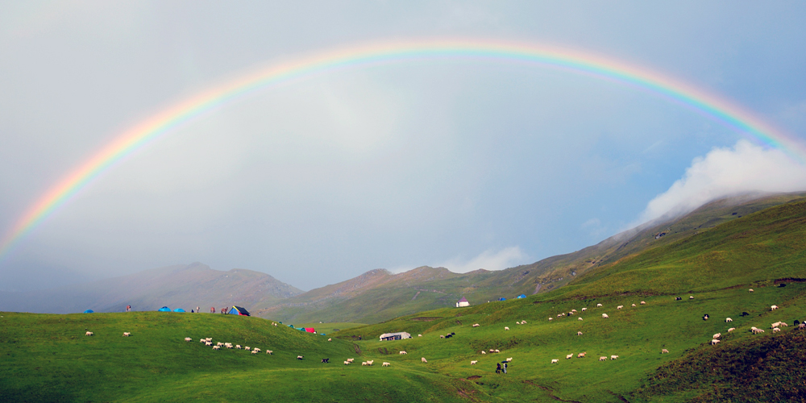
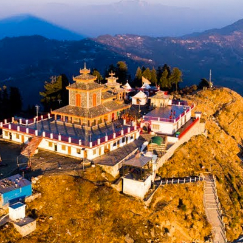
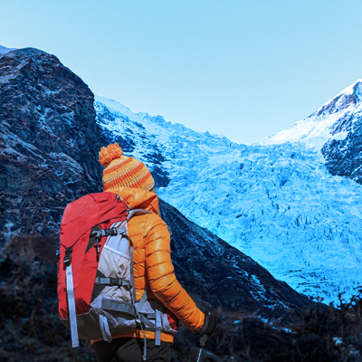
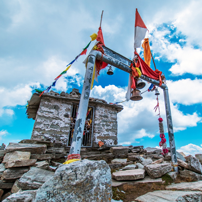
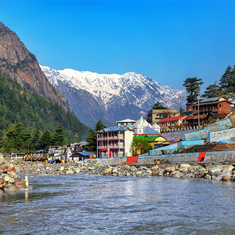

Dodital Yamunotri Trek
Destinations: Rishikesh - Uttarkashi - Agora -Dodital - Seema -Hanumanchatti - Yamunotri - Barkot
Experience: Trekking (moderate)
Maximum Altitude: 3024 m (Approx)
Duration: 8 days
Ideal Time: March-June
START
DAY 1

RISHIKESH
All the participants are requested to assemble at GMVN-Tourist Rest House, Muni-ki-Reti, Rishikesh. Dinner and overnight at TRH, Muni-ki-Reti, Rishikesh.
DAY 2

UTTARKASHI
Drive to Uttarkashi, 155 kms away. Hot lunch will be served en-route. Dinner and overnight stay at TRH, Uttarkashi.
DAY 3
KALYANI
The third day will see the commencement of the trek. Drive for 17 kms to Kalyani. Then the trek starts. Trek for 6 kms trek to Agoda with a packed lunch. Dinner and overnight stay in camps.
DAY 4

DODITAL
Start the 16 kms trek to Dodital with a packed lunch. Enjoy nature’s bounty surrounded by dense Oak Woods, Pine, Deodar and Rhododendrons. One can enjoy recreation activities like angling, boating and bird watching. Dinner and overnight stay in camps.
DAY 5

SEEMA
Next morning, buck up for a 16 kms trek to Seema with a packed lunch. Dinner and overnight stay in camps.
DAY 6

HANUMANCHATTI
The descent starts on day 6. Start your trek in the morning. It is a 13 kilometers trek to Jatoli. It will take around 5 hours to reach Jatoli. Overnight stay in Jatoli.
DAY 7

YAMUNOTRI
The 14 kms trek to Yamunotri starts on the 7 day. One can visit the Yamunotri temple here. It is a part of the Char Dham pilgrimage. The temple opens its doors in May. Dinner and overnight stay in TRH.
DAY 8

HANUMANCHATTI
It’s time to descend. Next day, start the 14 kms trek back to Hanumanchatti with a packed lunch. Dinner and overnight stay at TRH Hanumanchatti.
END